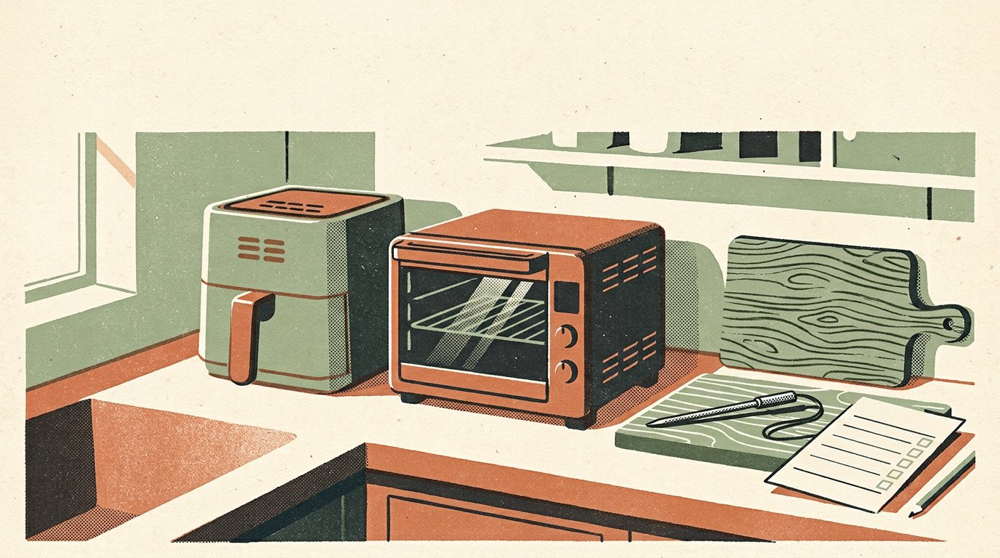

How to read an appliance review without getting played
Half a dozen tells that separate a publication from a content farm — including the ones this site is guilty of.
Quarts measure the box, not the dinner. Here is how to read a capacity number without being sold a fantasy about a whole chicken.
Appliances are abandoned for friction, not for faults. Sixty seconds of arithmetic about your own sink predicts month four better than any rating.
Eight functions is a number, not a benefit. This is the argument you should have with yourself before the box arrives.

Basket, oven-style, or nothing at all
The air-fryer decision is not a brand decision, it is a shape decision: how much counter you are spending, how much food fits in one pass, and whether the parts go in the dishwasher.
When more functions means fewer decisions
Multi-function appliances earn their counter space only if you use more than one function. This section is the argument you have with yourself before buying, written down.
The two costs nobody puts in the headline
Counter appliances die of friction, not of quality. Sixty seconds of arithmetic about your own shelf depth and sink habits predicts whether you will still use this thing in month four.
Tools and thresholds that do not go out of date
Thermometers, rest times, oven racks, and how to read a spec sheet. The unglamorous layer that decides whether an expensive gadget becomes a daily habit or a cabinet resident.
What we are lining up for this section of the kitchen — with the paperwork visible instead of hidden.
0 verified listings 5 intake records
Nothing about this listing is confirmed yet — no name, no price, no rating. The register page says exactly what is missing.
No submitted identifier resolved to a real listing yet, so there is nothing to link to. When a listing is confirmed, this card gains a price, a rating and a working button.
Nothing about this listing is confirmed yet — no name, no price, no rating. The register page says exactly what is missing.
No submitted identifier resolved to a real listing yet, so there is nothing to link to. When a listing is confirmed, this card gains a price, a rating and a working button.
Nothing about this listing is confirmed yet — no name, no price, no rating. The register page says exactly what is missing.
No submitted identifier resolved to a real listing yet, so there is nothing to link to. When a listing is confirmed, this card gains a price, a rating and a working button.
Nothing about this listing is confirmed yet — no name, no price, no rating. The register page says exactly what is missing.
No submitted identifier resolved to a real listing yet, so there is nothing to link to. When a listing is confirmed, this card gains a price, a rating and a working button.
Nothing about this listing is confirmed yet — no name, no price, no rating. The register page says exactly what is missing.
No submitted identifier resolved to a real listing yet, so there is nothing to link to. When a listing is confirmed, this card gains a price, a rating and a working button.
Our whole front page is built around these, because they are the questions a buying decision turns on. They are ours, not a search report: we have no query data yet, and we will not pretend to.
Most advice sites have one source: the author. This one has a register — the official documents we read, the clause, the quotation, and the date it was checked — plus a list of everything we could not confirm. If a row here is wrong, the fix is a pull request.
Reader pages end above. These are the working surfaces, one click from here and from the footer.
The state of the project in one page.
Open →Every register, ledger and record in tables.
Open →40 options, three paths, your call.
Open →14 questions gating every decision.
Open →16 open items, each with its source links.
Open →5 events, one endpoint, no profiles.
Open →